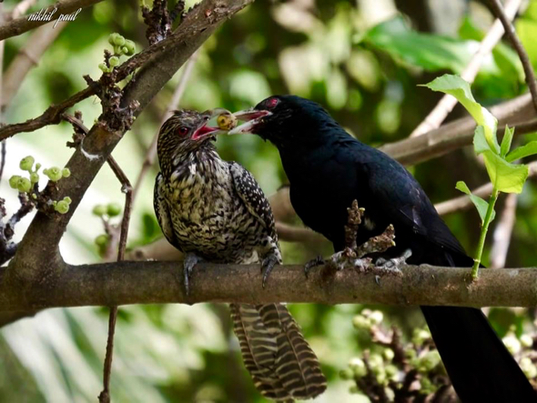

Ever wondered what makes the "ooh-woo" bird calls in the morning? It comes from the Asian koel, which is a large cuckoo bird. Its loud call is made by male birds in order to attract female birds to mate.
The male Asian koel is glossy bluish-black, with a pale greenish grey bill, the iris is crimson, and it has grey legs and feet. The female is brownish on the crown and has rufous streaks on the head. The back, rump, and wing coverts are dark brown with white and buff spots. The underparts are whitish but are heavily striped. The upper plumage of young birds is more like that of the male and they have a black beak.
Win!
Bring the bird back to the nest using the arrow keys
It is a brood parasite, meaning that it lays its eggs in the nests of other birds. Its eggs would hatch about 3 days ahead of the hosts chicks, but does not always push out the other eggs or evict the host chicks. The hosts will care for the young Koel, which will fledge in 20 to 28 days. In Singapore, it usually lays its eggs in the nests of House Crows.
It is a brood parasite, meaning that it lays its eggs in the nests of other birds. Its eggs would hatch about 3 days ahead of the hosts chicks, but does not always push out the other eggs or evict the host chicks. The hosts will care for the young Koel, which will fledge in 20 to 28 days. In Singapore, it usually lays its eggs in the nests of House Crows.
The Asian Koel primarily resides in light woodlands, shrubby areas with scattered trees, gardens, plantations, and urban areas. They can be found in China, South Asia and Southeast Asia. The black parts on the map represent the distribution of the Asian Koel.